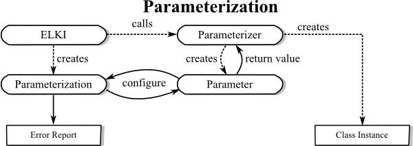

ELKI: Environment for DeveLoping KDD-Applications Supported by Index-Structures.
ELKI is a generic framework for a broad range of KDD-applications
and their development.
For background, contact-information, and contributors see
http://www.dbs.ifi.lmu.de/research/KDD/ELKI/.
This is the documentation for version 0.3, published as:
Achtert, E., Kriegel, H.-P., Reichert, L., Schubert, E., Wojdanowski, R., and Zimek, A.:
Visual Evaluation of Outlier Detection Models.
In Proc. 15th International Conference on Database Systems for Advanced Applications (DASFAA), Tsukuba, Japan, 2010.
Workflow - Where Do Which Objects Go?
The database connection manages reading of input files or databases and provides a {@link de.lmu.ifi.dbs.elki.database.Database Database}-Object as a virtual database to the KDDTask.
The KDDTask applies a specified algorithm on this database and collects the result from the algorithm.
Finally, KDDTask hands on the obtained result to a {@link de.lmu.ifi.dbs.elki.result.ResultHandler ResultHandler}.
The default-handler is {@link de.lmu.ifi.dbs.elki.result.ResultWriter ResultWriter}, writing the result to STDOUT or,
if specified, into a file.
Database and indexing layer
The database and indexing layer is a key component of ELKI.
This is not just a storage for double[], as with many other frameworks.
Instead the integrated index structures provide access to fast
{@link de.lmu.ifi.dbs.elki.database.query.distance.DistanceQuery distance},
{@link de.lmu.ifi.dbs.elki.database.query.similarity.SimilarityQuery similarity},
{@link de.lmu.ifi.dbs.elki.database.query.knn.KNNQuery kNN},
{@link de.lmu.ifi.dbs.elki.database.query.rknn.RKNNQuery RkNN} and
{@link de.lmu.ifi.dbs.elki.database.query.range.RangeQuery range} query methods.
The standard flow for initializing a database is as depicted here:

The standard stream-based data sources such as
{@link de.lmu.ifi.dbs.elki.datasource.FileBasedDatabaseConnection FileBasedDatabaseConnection}
will open the stream, feed the contents through a
{@link de.lmu.ifi.dbs.elki.datasource.parser.Parser Parser} to obtain an initial
{@link de.lmu.ifi.dbs.elki.datasource.bundle.MultipleObjectsBundle MultipleObjectsBundle}. This is
a temporary container for the data, which can then be modified by arbitrary
{@link de.lmu.ifi.dbs.elki.datasource.filter.ObjectFilter ObjectFilter}s.
In the end, the
{@link de.lmu.ifi.dbs.elki.datasource.bundle.MultipleObjectsBundle MultipleObjectsBundle}
is bulk-inserted into a {@link de.lmu.ifi.dbs.elki.database.Database Database}, which will then
invoke its {@link de.lmu.ifi.dbs.elki.index.IndexFactory IndexFactory}s to add
{@link de.lmu.ifi.dbs.elki.index.Index Index} instances to the appropriate relations.
When a request for a
{@link de.lmu.ifi.dbs.elki.database.query.distance.DistanceQuery distance},
{@link de.lmu.ifi.dbs.elki.database.query.similarity.SimilarityQuery similarity},
{@link de.lmu.ifi.dbs.elki.database.query.knn.KNNQuery kNN},
{@link de.lmu.ifi.dbs.elki.database.query.rknn.RKNNQuery RkNN} or
{@link de.lmu.ifi.dbs.elki.database.query.range.RangeQuery range} query is received by the database,
it queries all indexes if they have support for this query. If so, an optimized query is returned,
otherwise a linear scan query can be returned unless
{@link de.lmu.ifi.dbs.elki.database.query.DatabaseQuery#HINT_OPTIMIZED_ONLY DatabaseQuery.HINT_OPTIMIZED_ONLY}
was given.
For this optimization to work, you should be using the proper APIs of the
{@link de.lmu.ifi.dbs.elki.database.Database Database} interface or
{@link de.lmu.ifi.dbs.elki.database.QueryUtil QueryUtil} helper where possible, instead of
initializing low level classes such as an explicit linear scan query.
For efficiency, try to instantiate the query only once per algorithm run, and avoid running the
optimization step for every object.
Parameterization API
ELKI is designed for command-line, GUI and Java operation. For command-line and GUI, an extensive
help functionality is provided along with input assistance. Therefore, you should also support the
parameterizable API. The requirements are quite different from regular Java constructors, and cannot
be expressed in terms of a Java API.
For useful error reporting and input assistance in the GUI we need to have more extensive
typing than Java uses (for example we might need numerical constraints) and we also want to be able
to report more than one error at a time. In ELKI 0.4, much of the parameterization was
refactored to static helper classes usually found as a public static class Parameterizer
and subclasses of
{@link de.lmu.ifi.dbs.elki.utilities.optionhandling.AbstractParameterizer AbstractParameterizer}.

Keep the complexity of Parameterizer classes and constructors invoked by these classes low, since
these may be heavily used during the parameterization step. Postpone any extensive initialization
to the main algorithm invocation step!
How to make use of this framework
Extension
To provide new applications one is simply to implement the specified interfaces.
There are interfaces for a broad range of targets of development. Compare the
tree of interfaces to get an overview
concerning the provided interfaces.
Usage
To use the KDD-Framework we recommend an executable .jar-file:
elki.jar. Since release 0.3 it will by default invoke a minimalistic GUI when
you call java -jar elki.jar. For command line use, you get a description of usage by calling
java -cp elki.jar de.lmu.ifi.dbs.elki.application.KDDCLIApplication -h.
You can read more about the MiniGUI and Visualizations on a separate page.
The {@link de.lmu.ifi.dbs.elki.application.visualization.KNNExplorer KNNExplorer} application published
with ELKI 0.2 is explained in the technical documentation.
Parameters and Parameter-Passing
The core class is {@link de.lmu.ifi.dbs.elki.KDDTask KDDTask} for command line interaction.
This class' main method manages the reading of parameters from the standard input and passes the parameters to the
corresponding classes which, in turn, could have parameters that expect parameterization.
The main class {@link de.lmu.ifi.dbs.elki.KDDTask KDDTask} requires specification of an
{@link de.lmu.ifi.dbs.elki.algorithm.Algorithm Algorithm}
to use, and a {@link de.lmu.ifi.dbs.elki.datasource.DatabaseConnection DatabaseConnection} to manage the input.
It can get assigned a specialized {@link de.lmu.ifi.dbs.elki.result.ResultHandler ResultHandler}.
The default ResultHandler {@link de.lmu.ifi.dbs.elki.result.ResultWriter ResultWriter} expects
a filename where to deploy the output. However, by omitting specification of a filename for
output, the results will be given to standard output, thus it may be piped directly to another
application.
For more information on using files and available formats
as data input see {@link de.lmu.ifi.dbs.elki.datasource.parser}.
Furthermore a normalization can be specified for the input.
You can additionally require to restore the original values for the output.
Which input is to be provided in what way
is to be defined via parameters specifically for a certain
{@link de.lmu.ifi.dbs.elki.datasource.DatabaseConnection DatabaseConnection}.
The need for other parameters may differ from implementation to implementation. However,
you need not to specify input nor output if you are going to implement an algorithm.
An extensive list of parameters can be browsed sorted by class
or sorted by option ID.
Some examples of completely parameterized calls for different algorithms are described
at example calls.
A list of related articles can be found in the class article references list.